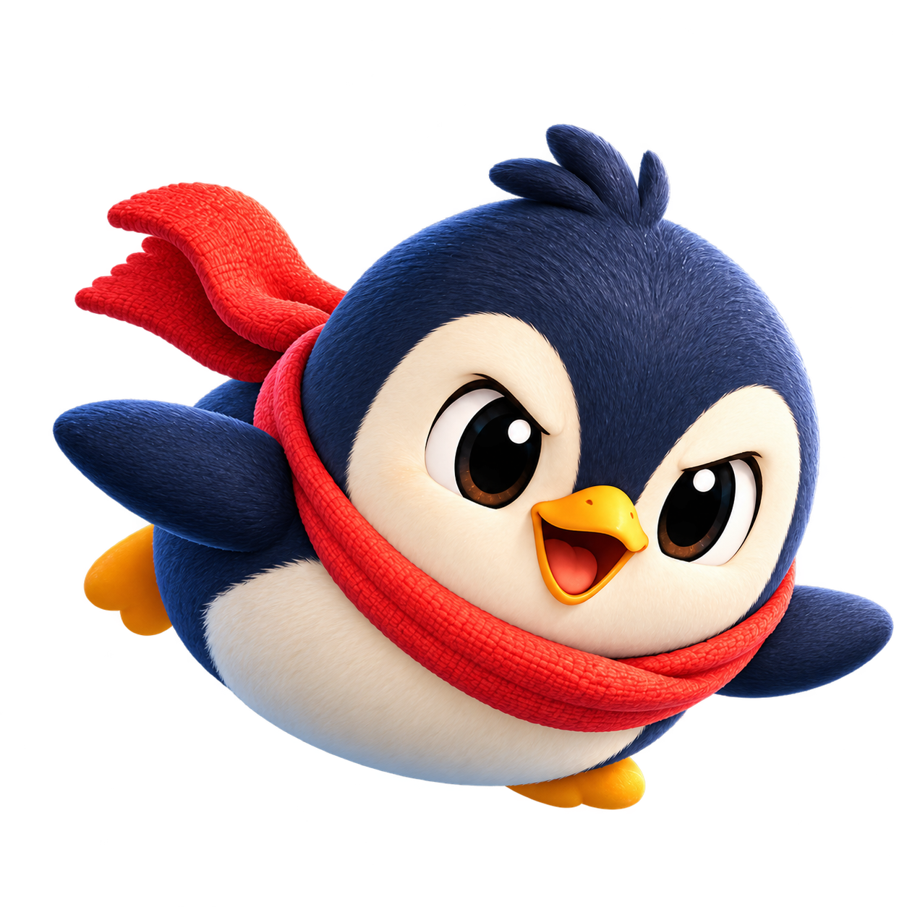

A close call, a big grin.
Keep moving as snowballs roll in from every side. A well-timed belly slide helps you slip through the chaos.
A pocket-sized adventure on ice
Snowballs everywhere. Golden fish worth chasing. One very determined little penguin.
Getting ready for mobile.

One more little adventure
Find your way through the snowballs, then chase a new personal best. Every run is a fresh little challenge.
Designed for portrait play · 16 game languages · Progress saved on your device
Keep moving as snowballs roll in from every side. A well-timed belly slide helps you slip through the chaos.
Collect golden fish for points and flight energy. Fill up, flap your wings and soar over the snowballs for a short escape.
Unlock 124 accessories across 6 categories, from cosy scarves to little wings. All style, with no change to collision or speed.